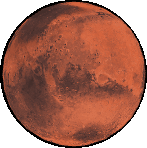

Humanity's future lies in the stars, and I dream to be part of that voyage.
Aerospace blurs the line between science, technology, engineering, and mathematics. It solves
problems through unique methods rooted in countless fields, from aircraft pilotry to software
development.
Over the years, I've created a variety of aerospace engineering projects through combining
astrophysics, structural analysis, and computational fluid dynamics—eventually leading me to NASA's
Langley Research Center through the VASTS program.
Click on each celestial body to learn more. It's just rocket science.


